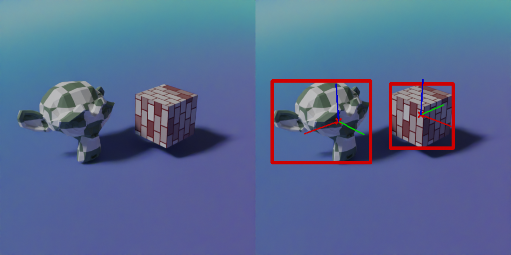

Capturing pose
In this example, we show how to capture the bounding box, object centre, and local object axes.
{kind=link}
"""Script to show how to capture the pose of 3D objects."""
import blendersynth as bsyn
bsyn.run_this_script(blend_src='../resources/scenes/capturing_pose.blend') # load from scene
# Load Blender script and set-up render properties
bsyn.render.set_resolution(512, 512)
bsyn.render.set_cycles_samples(10)
# Get objects
monkey = bsyn.Mesh.from_scene('Monkey')
cube = bsyn.Mesh.from_scene('Cube')
# Define compositor and visuals
comp = bsyn.Compositor()
bounding_box_visual = comp.get_bounding_box_visual()
keypoints_visual = comp.get_keypoints_visual(marker='x') # Create a visual of keypoints
axis_visual = comp.get_axes_visual()
combined_visual = comp.stack_visuals(bounding_box_visual, keypoints_visual, axis_visual)
# Define outputs
comp.define_output('Image', directory='pose')
comp.define_output(combined_visual, file_name='visual', directory='pose')
# Calculate bounding boxes
objects = [monkey, cube]
bounding_boxes = bsyn.annotations.bounding_boxes(objects)
# Calculate object centres as keypoints
keypoints = bsyn.annotations.keypoints.project_keypoints([obj.centroid() for obj in objects])
# Calculate axes in 2D. In 3D, use e.g. monkey.axes
axes = bsyn.annotations.get_axes(objects)
comp.render(annotations=axes + keypoints + bounding_boxes)